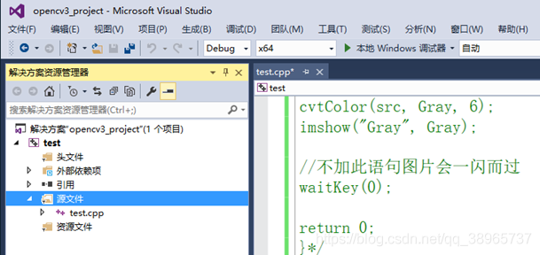
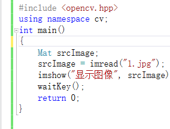
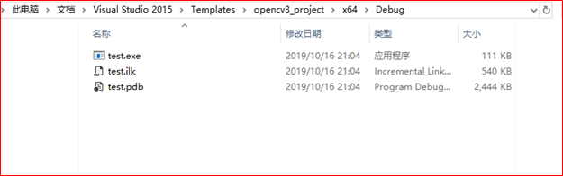
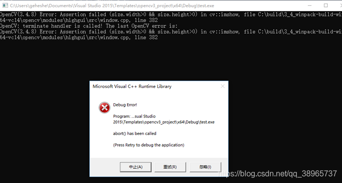
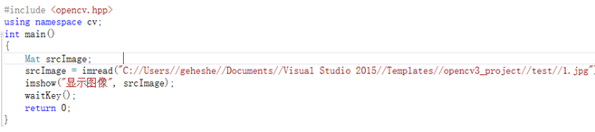
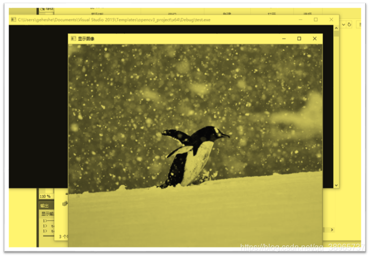

OpenCV 运行生成的解决方案文件提示如下错误：
OpenCV(3.4.8) Error: Assertion failed (size.width>0 &&
size.height>0) in cv::imshow, file
C:\build\3_4_winpack-build-win64-vc14\opencv\modules\highgui\src\window.cpp,
line 382
OpenCV: terminate handler is called! The last OpenCV error is:
OpenCV(3.4.8) Error: Assertion failed (size.width>0 &&
size.height>0) in cv::imshow, file
C:\build\3_4_winpack-build-win64-vc14\opencv\modules\highgui\src\window.cpp,
line 382
1、运行环境：Windows10+VS2015+OpenCV3.4.8
你好！ 这是你第一次使用 Markdown编辑器 所展示的欢迎页。如果你想学习如何使用Markdown编辑器, 可以仔细阅读这篇文章，了解一下Markdown的基本语法知识。
2、OpenCV调试配置：Debug+x64 如下图所示：

3.1输入 代码，如下图所示：

点击 调试—开始执行（不调试）H，结果正常。
3.2点击 生成—生成解决方案。
在工程名>x64>Debug文件夹目录下，即为解决方案生成的目录，如下图所示：

双击运行test.exe文件，出现如下图错误提示：

4、错误原因：
由于程序中读取图片的路径写的是相对路径，这个相对路径是相对于主程序.cpp文件位
置，即与主程序再同一级目录，但生成的解决方案文件在与图片不是同一级目录。故需要写出绝对目录，如下图所示；

最后执行生成的解决方案文件test.exe，测试成功，如下图所示：



![]()
 4162
4162